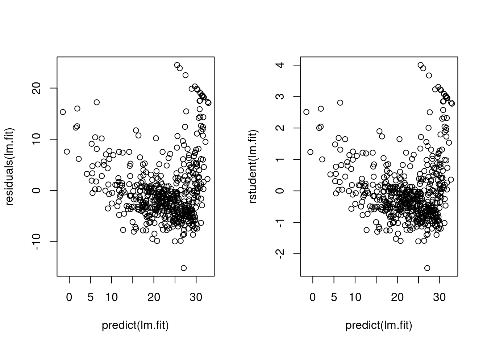
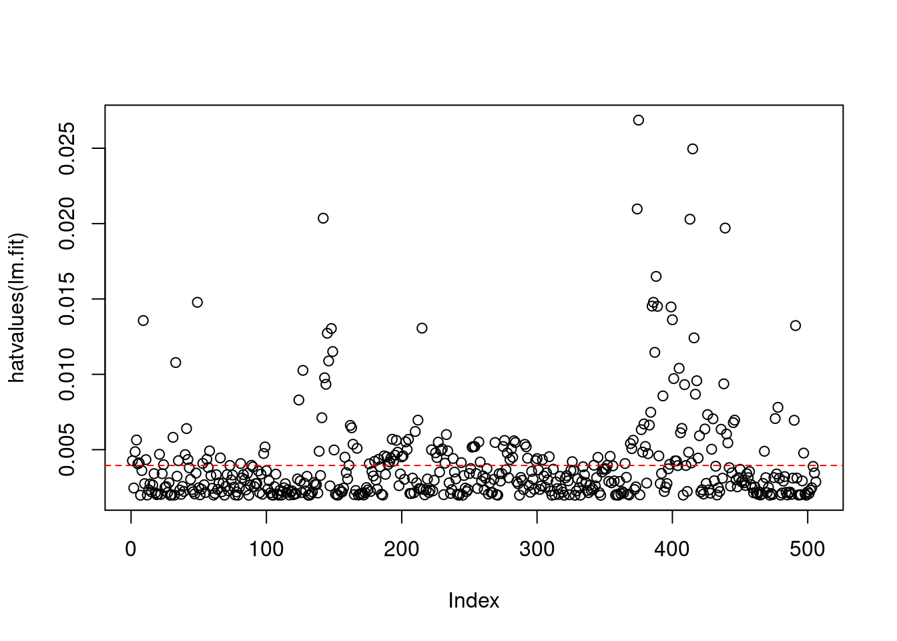
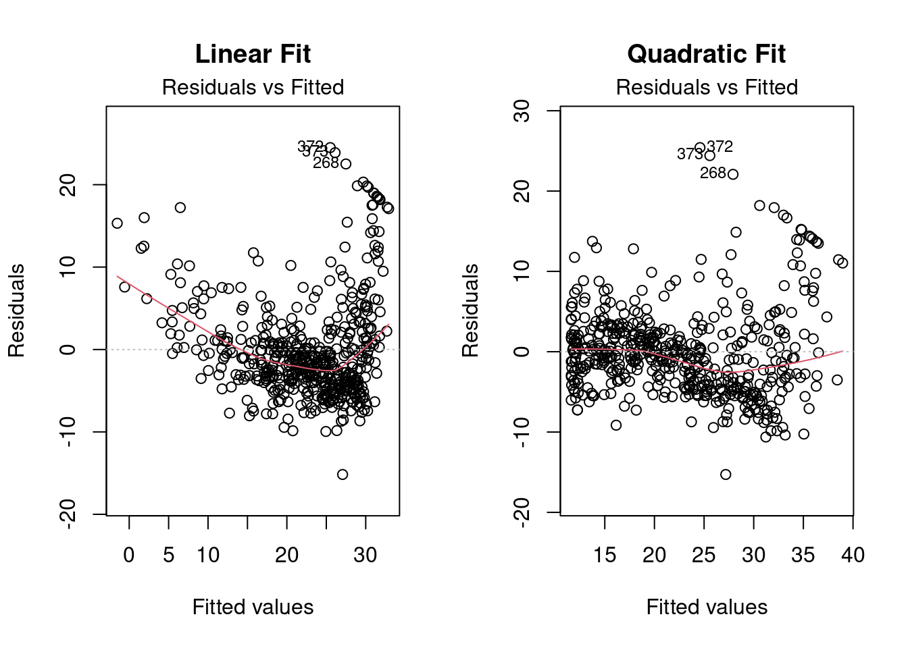
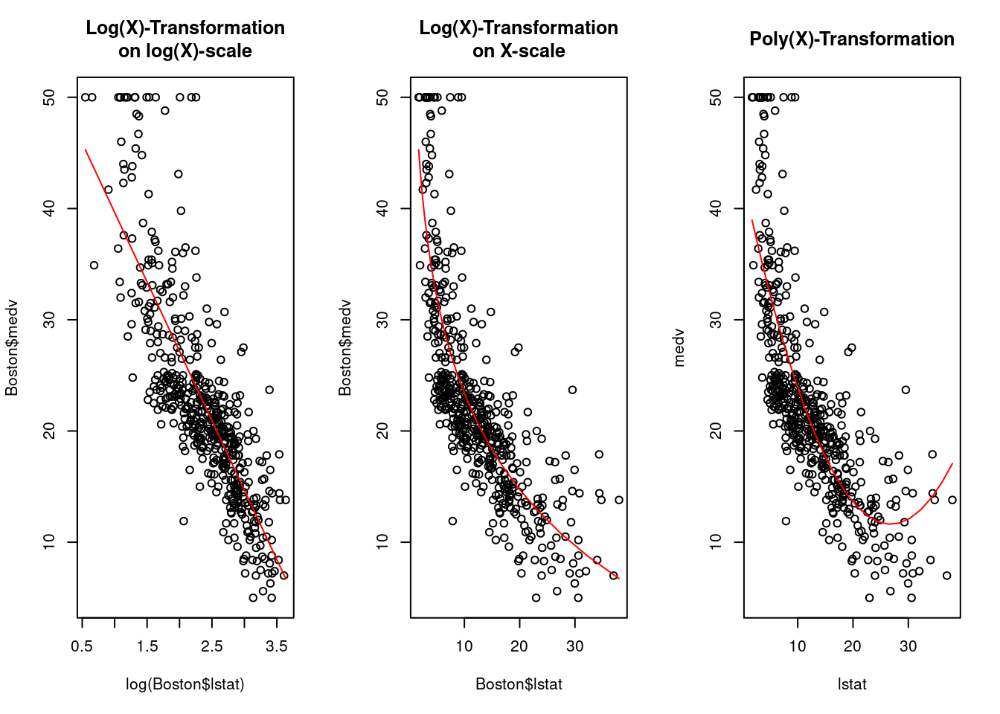

# install.packages("MASS")
# install.packages("ISLR")
library("MASS") # contains the 'Boston' data-set among others
library("ISLR") # contains further data-sets
# check: help(package="ISLR")3 R-Lab Ch 3: Linear Regression”
First, load the necessary R-packages for this RLab:
4 Simple Linear Regression
Let’s take a first look at the data. The Boston data sets contains information about \(N=506\) neighborhoods around Boston.
View(Boston) # allows you to take a view on the data
fix(Boston) # allows you also to edit the data
names(Boston) # column-namesIn the following, we estimate a simple linear regression model \(y_i=\alpha + \beta x_i + \varepsilon_i\) with medv (median house value) as the dependent variable, \(y_i\), and lstat (percent of households with low socioeconomic status) as the predictor-variable, \(x_i\).
lm.fit=lm(medv ~ lstat, data=Boston) # works fine
attach(Boston)
lm.fit = lm(medv~lstat) # works fine too after attaching the data
# lm.fit
## Regression-Output
summary(lm.fit)
Call:
lm(formula = medv ~ lstat)
Residuals:
Min 1Q Median 3Q Max
-15.168 -3.990 -1.318 2.034 24.500
Coefficients:
Estimate Std. Error t value Pr(>|t|)
(Intercept) 34.55384 0.56263 61.41 <2e-16 ***
lstat -0.95005 0.03873 -24.53 <2e-16 ***
---
Signif. codes: 0 '***' 0.001 '**' 0.01 '*' 0.05 '.' 0.1 ' ' 1
Residual standard error: 6.216 on 504 degrees of freedom
Multiple R-squared: 0.5441, Adjusted R-squared: 0.5432
F-statistic: 601.6 on 1 and 504 DF, p-value: < 2.2e-16The names(lm.fit) function tells you the names of the list-entries in the list-object lm.fit. I little more information is given by str(lm.fit). You can extract the coefficients by selecting the corresponding list-entry, i.e., by lm.fit$coefficients. Alternatively, you can use the coef() function.
names(lm.fit) [1] "coefficients" "residuals" "effects" "rank"
[5] "fitted.values" "assign" "qr" "df.residual"
[9] "xlevels" "call" "terms" "model" coef(lm.fit)(Intercept) lstat
34.5538409 -0.9500494 The function confint() computes confidence intervals for the regression coefficients.
confint(lm.fit) 2.5 % 97.5 %
(Intercept) 33.448457 35.6592247
lstat -1.026148 -0.8739505The predict() function can be used to compute the prediction interval \[
\hat{y}_{0} \pm t_{n-p}^{(\alpha / 2)} \sqrt{\hat{\sigma}^2+x_{0}^{T}\left(X^{T} X\right)^{-1} x_{0}\hat{\sigma}^2}.
\] This is a \(100(1-\alpha)\%\) prediction interval for a future medv-response \(y\), at a given predictor vector, \(x_0=(1,\tilde{x}_0)'\). The matrix \(X\) denotes a \(N\times p\) matrix (here \(p=2\)) having \(1\)s in the first column and the lstat-predictor values \(x_1,\dots,x_N\) in the second column. Note that the prediction interval consists of two variance-components; first, the (estimated) variance of the error term, \(\hat{\sigma}^2\), and, second, the (estimated) variance of the empirical regression function at a chosen point \(x_0\) of interest, i.e. here \(Var(\hat{f}(x_0))=Var(x_0'\hat{\beta})=x_0'(X'X)^{-1}x_0\hat{\sigma}^2\).
predict(lm.fit,data.frame(lstat=(c(5,10,15))), interval="prediction") fit lwr upr
1 29.80359 17.565675 42.04151
2 25.05335 12.827626 37.27907
3 20.30310 8.077742 32.52846Caution: The predict function has also the option interval="confidence". This, shall not be mixed up with a confidence interval for the parameters which was computed above using confint(). Under this option you compute the following confidence interval \[
\hat{y}_{0} \pm t_{n-p}^{(\alpha / 2)} \sqrt{x_{0}^{T}\left(X^{T} X\right)^{-1} x_{0}\hat{\sigma}^2}.
\] This confidence interval is similar to the prediction interval above, but without the component for the variance of the error term. So, this is a confidence interval for \(f(x_0)=x_0'\hat{\beta}\).
predict(lm.fit,data.frame(lstat=(c(5,10,15))), interval="confidence") fit lwr upr
1 29.80359 29.00741 30.59978
2 25.05335 24.47413 25.63256
3 20.30310 19.73159 20.87461Plotting the data along with a graph of the estimated regression function.
plot(x = lstat,y = medv)
abline(lm.fit,lwd=3,col="red")
# plot(lstat, medv, col="red") # red points
# plot(lstat, medv, pch=20) # other type of points
# plot(lstat, medv, pch="+") # '+' instead of points
# plot(1:20, 1:20, pch=1:20) # overview of point-optionsDiagnostic plots.
par(mfrow=c(2,2))
plot(lm.fit)
Inspecting the results by hand.
par(mfrow=c(1,2))
plot(x = predict(lm.fit), y = residuals(lm.fit))
plot(x = predict(lm.fit), y = rstudent(lm.fit))
So, there are several positive outliers which can be seen by the standardized residuals with values \(>+2\).
Leverage statistics exceeding \((p+1)/n=2/506=0.004\) are considered as high-leverage points.
n <- length(fitted.values(lm.fit))
p <- length(coef(lm.fit)) - 1
lower_threshold <- (p+1)/n
which(hatvalues(lm.fit) > lower_threshold) 1 3 4 5 6 9 11 21 24 31 33 35 40 41 42 49 53 56 58 66
1 3 4 5 6 9 11 21 24 31 33 35 40 41 42 49 53 56 58 66
81 89 98 99 124 127 139 141 142 143 144 145 146 148 149 150 158 161 162 163
81 89 98 99 124 127 139 141 142 143 144 145 146 148 149 150 158 161 162 163
164 167 176 180 183 187 189 190 191 192 193 194 195 196 197 200 201 203 204 205
164 167 176 180 183 187 189 190 191 192 193 194 195 196 197 200 201 203 204 205
210 212 215 222 225 226 227 229 230 232 233 234 238 244 252 253 254 257 258 269
210 212 215 222 225 226 227 229 230 232 233 234 238 244 252 253 254 257 258 269
275 276 278 280 281 282 283 284 291 292 293 299 300 304 309 326 342 345 352 354
275 276 278 280 281 282 283 284 291 292 293 299 300 304 309 326 342 345 352 354
365 369 370 371 374 375 377 378 379 380 382 383 384 385 386 387 388 389 390 393
365 369 370 371 374 375 377 378 379 380 382 383 384 385 386 387 388 389 390 393
398 399 400 401 402 403 405 406 407 409 412 413 414 415 416 417 418 419 420 424
398 399 400 401 402 403 405 406 407 409 412 413 414 415 416 417 418 419 420 424
426 429 430 436 438 439 440 441 445 446 468 476 478 490 491 497
426 429 430 436 438 439 440 441 445 446 468 476 478 490 491 497 which.max(hatvalues(lm.fit))375
375 par(mfrow=c(1,1))
plot(hatvalues(lm.fit))
abline(h=lower_threshold, col="red", lty=2)
Typically, we would like to avoid working with outliers having high leverage values (e.g. lower_threshold * 2).
standardized_resid <- scale(resid(lm.fit))
which(abs(standardized_resid) > 2 & hatvalues(lm.fit) > lower_threshold * 2)[1] 142 215 375 4135 Multiple Linear Regression
Let’s do now a multiple linear regression estimation, where we investigate the effects of the predictors lstat and age on the dependent variable medv
lm.fit <- lm(medv ~ lstat + age, data = Boston)
summary(lm.fit)
Call:
lm(formula = medv ~ lstat + age, data = Boston)
Residuals:
Min 1Q Median 3Q Max
-15.981 -3.978 -1.283 1.968 23.158
Coefficients:
Estimate Std. Error t value Pr(>|t|)
(Intercept) 33.22276 0.73085 45.458 < 2e-16 ***
lstat -1.03207 0.04819 -21.416 < 2e-16 ***
age 0.03454 0.01223 2.826 0.00491 **
---
Signif. codes: 0 '***' 0.001 '**' 0.01 '*' 0.05 '.' 0.1 ' ' 1
Residual standard error: 6.173 on 503 degrees of freedom
Multiple R-squared: 0.5513, Adjusted R-squared: 0.5495
F-statistic: 309 on 2 and 503 DF, p-value: < 2.2e-16There is a short-cut formula notation for regressing a dependent variable on all predictors in the data set:
lm.fit <- lm(medv ~ ., data = Boston)
summary(lm.fit)
Call:
lm(formula = medv ~ ., data = Boston)
Residuals:
Min 1Q Median 3Q Max
-15.595 -2.730 -0.518 1.777 26.199
Coefficients:
Estimate Std. Error t value Pr(>|t|)
(Intercept) 3.646e+01 5.103e+00 7.144 3.28e-12 ***
crim -1.080e-01 3.286e-02 -3.287 0.001087 **
zn 4.642e-02 1.373e-02 3.382 0.000778 ***
indus 2.056e-02 6.150e-02 0.334 0.738288
chas 2.687e+00 8.616e-01 3.118 0.001925 **
nox -1.777e+01 3.820e+00 -4.651 4.25e-06 ***
rm 3.810e+00 4.179e-01 9.116 < 2e-16 ***
age 6.922e-04 1.321e-02 0.052 0.958229
dis -1.476e+00 1.995e-01 -7.398 6.01e-13 ***
rad 3.060e-01 6.635e-02 4.613 5.07e-06 ***
tax -1.233e-02 3.760e-03 -3.280 0.001112 **
ptratio -9.527e-01 1.308e-01 -7.283 1.31e-12 ***
black 9.312e-03 2.686e-03 3.467 0.000573 ***
lstat -5.248e-01 5.072e-02 -10.347 < 2e-16 ***
---
Signif. codes: 0 '***' 0.001 '**' 0.01 '*' 0.05 '.' 0.1 ' ' 1
Residual standard error: 4.745 on 492 degrees of freedom
Multiple R-squared: 0.7406, Adjusted R-squared: 0.7338
F-statistic: 108.1 on 13 and 492 DF, p-value: < 2.2e-16The command summary(lm.fit) returns a list-object and you can get access to each of the list entries by using the $ operator (use the str() function to get an overview). For instance, summary(lm.fit)$r.sq gives us the \(R^2\) , and summary(lm.fit)$sigma gives us the estimated standard deviations of the error term, which might not be a sensible statistic in case of heteroscedastic error term.
5.1 Variance inflation factors
Potential multicollinearity problems, can be detected using variance inflation factors \[ \operatorname{VIF}\left(\hat{\beta}_{j}\right)=\frac{1}{1-R_{X_{j} \mid X_{-j}}^{2}} \] VIF-values close to 1 are indicating that the \(j\)th predictor is orthogonal to the space spanned by the other predictors (i.e. the other predictors, \(X_{-j}\) cannot explain the \(j\)th predictor \(X_j\)). Large VIF-values \(\gg 1\) are indicating that there may be an multicollinearity problem with the \(j\)th predictor.
In order to compute the variance inflation factors, we can use the function vif() of the package .
library("car")Loading required package: carDatavif_vec <- vif(lm.fit)
vif_vec[order(vif_vec)] chas black crim ptratio rm zn lstat age
1.073995 1.348521 1.792192 1.799084 1.933744 2.298758 2.941491 3.100826
dis indus nox rad tax
3.955945 3.991596 4.393720 7.484496 9.008554 5.2 Formula-Ticks for working with lm()
A short-cut notation for a regression on all predictor variables in the data except on the age is the following
lm.fit1 <- lm(medv ~ . -age, data = Boston)
summary(lm.fit1)Alternatively, the update() function can be used based on the above computed lm.fit object.
lm.fit1 <- update(lm.fit, ~.-age)6 Interaction Terms
It is easy to include interaction terms in a linear model using the lm() function. The syntax lstat:black tells R to include an interaction term between lstat and black. The syntax lstat*age simultaneously includes lstat, age, and the interaction term lstat\(\times\)age as predictors; it is a shorthand for lstat+age+lstat:age.
summary(lm(medv ~ lstat * age, data = Boston))
Call:
lm(formula = medv ~ lstat * age, data = Boston)
Residuals:
Min 1Q Median 3Q Max
-15.806 -4.045 -1.333 2.085 27.552
Coefficients:
Estimate Std. Error t value Pr(>|t|)
(Intercept) 36.0885359 1.4698355 24.553 < 2e-16 ***
lstat -1.3921168 0.1674555 -8.313 8.78e-16 ***
age -0.0007209 0.0198792 -0.036 0.9711
lstat:age 0.0041560 0.0018518 2.244 0.0252 *
---
Signif. codes: 0 '***' 0.001 '**' 0.01 '*' 0.05 '.' 0.1 ' ' 1
Residual standard error: 6.149 on 502 degrees of freedom
Multiple R-squared: 0.5557, Adjusted R-squared: 0.5531
F-statistic: 209.3 on 3 and 502 DF, p-value: < 2.2e-167 Non-linear Transformations of the Predictors
The lm() function can also accommodate non-linear transformations of the predictors. For instance, given a predictor \(X\), we can create a predictor \(X^2\) using I(X^2). The function I() is needed since the ^ has a special meaning in a formula (see ?formula in ). However, the wrapping I(X^2) allows the standard usage of ^ in , which is to raise \(X\) to the power \(2\). We now perform a regression of medv onto lstat and lstat\(^2\).
## Full model
lm.fit2 <- lm(medv~lstat+I(lstat^2), data = Boston)
summary(lm.fit2)
Call:
lm(formula = medv ~ lstat + I(lstat^2), data = Boston)
Residuals:
Min 1Q Median 3Q Max
-15.2834 -3.8313 -0.5295 2.3095 25.4148
Coefficients:
Estimate Std. Error t value Pr(>|t|)
(Intercept) 42.862007 0.872084 49.15 <2e-16 ***
lstat -2.332821 0.123803 -18.84 <2e-16 ***
I(lstat^2) 0.043547 0.003745 11.63 <2e-16 ***
---
Signif. codes: 0 '***' 0.001 '**' 0.01 '*' 0.05 '.' 0.1 ' ' 1
Residual standard error: 5.524 on 503 degrees of freedom
Multiple R-squared: 0.6407, Adjusted R-squared: 0.6393
F-statistic: 448.5 on 2 and 503 DF, p-value: < 2.2e-16The near-zero p-value associated with the quadratic term suggests that it leads to an improved model. We use the anova() function to further quantify the extent to which the quadratic fit is superior to the linear fit.
## Small sub-model
lm.fit <- lm(medv~lstat, data = Boston)
## Compare both models
## H0: Both models fit the data equally well.
## H1: The full model fits the data better.
anova(lm.fit, lm.fit2)Analysis of Variance Table
Model 1: medv ~ lstat
Model 2: medv ~ lstat + I(lstat^2)
Res.Df RSS Df Sum of Sq F Pr(>F)
1 504 19472
2 503 15347 1 4125.1 135.2 < 2.2e-16 ***
---
Signif. codes: 0 '***' 0.001 '**' 0.01 '*' 0.05 '.' 0.1 ' ' 1The anova() function performs a hypothesis test comparing the two models. The null hypothesis is that the two models fit the data equally well, and the alternative hypothesis is that the full model is superior. Here the F-statistic is \(135.2\gg 1\) and the associated p-value is virtually zero. This provides very clear evidence that the model containing the predictors lstat and lstat\(^2\) is far superior to the model that only contains the predictor lstat. This is not surprising, since earlier we saw evidence for non-linearity in the relationship between medv and lstat. If we type
## Diagnostic checks
par(mfrow=c(1,2))
plot(lm.fit, which = 1, main="Linear Fit")
plot(lm.fit2, which = 1, main="Quadratic Fit")
then we see that when the lstat\(^2\) term is included in the model, there is little discernible pattern in the residuals.
In order to create a cubic fit, we can include a predictor of the form I(X^3), etc. However, this approach can start to get cumbersome for higher-order polynomials. A better approach involves using the poly() function to create the polynomial within lm():
lm.fit5 <- lm(medv ~ poly(lstat, 2, raw = TRUE), data = Boston)
summary(lm.fit5)
Call:
lm(formula = medv ~ poly(lstat, 2, raw = TRUE), data = Boston)
Residuals:
Min 1Q Median 3Q Max
-15.2834 -3.8313 -0.5295 2.3095 25.4148
Coefficients:
Estimate Std. Error t value Pr(>|t|)
(Intercept) 42.862007 0.872084 49.15 <2e-16 ***
poly(lstat, 2, raw = TRUE)1 -2.332821 0.123803 -18.84 <2e-16 ***
poly(lstat, 2, raw = TRUE)2 0.043547 0.003745 11.63 <2e-16 ***
---
Signif. codes: 0 '***' 0.001 '**' 0.01 '*' 0.05 '.' 0.1 ' ' 1
Residual standard error: 5.524 on 503 degrees of freedom
Multiple R-squared: 0.6407, Adjusted R-squared: 0.6393
F-statistic: 448.5 on 2 and 503 DF, p-value: < 2.2e-16Of course, we are in no way restricted to using polynomial transformations of the predictors. Here we try a log-transformation and then plot the \(log()\) and the polynomial transformations.
lm.fitLog <- lm(medv ~ log(lstat), data=Boston)
summary(lm.fitLog)
Call:
lm(formula = medv ~ log(lstat), data = Boston)
Residuals:
Min 1Q Median 3Q Max
-14.4599 -3.5006 -0.6686 2.1688 26.0129
Coefficients:
Estimate Std. Error t value Pr(>|t|)
(Intercept) 52.1248 0.9652 54.00 <2e-16 ***
log(lstat) -12.4810 0.3946 -31.63 <2e-16 ***
---
Signif. codes: 0 '***' 0.001 '**' 0.01 '*' 0.05 '.' 0.1 ' ' 1
Residual standard error: 5.329 on 504 degrees of freedom
Multiple R-squared: 0.6649, Adjusted R-squared: 0.6643
F-statistic: 1000 on 1 and 504 DF, p-value: < 2.2e-16## Plot polynomial vs. log
xpol <- seq(min(Boston$lstat),
max(Boston$lstat), length = 20) ## prediction grid
ypol <- predict.lm(lm.fit2, newdata = list(lstat = xpol))
xlog <- seq(min(log(Boston$lstat)),
max(log(Boston$lstat)), length = 20) ## prediction grid
ylog <- lm.fitLog$coefficients[1] + lm.fitLog$coefficients[2] * xlog
par(mfrow=c(1,3))
plot(log(Boston$lstat), Boston$medv, main="Log(X)-Transformation\non log(X)-scale")
lines(x = xlog, y = ylog, col="red")
plot(Boston$lstat, Boston$medv, main="Log(X)-Transformation\non X-scale")
lines(x = exp(xlog), y = ylog, col="red")
plot(medv ~ lstat, data = Boston, main="Poly(X)-Transformation", xlab="lstat")
lines(xpol, ypol, col="red")
8 Qualitative Predictors
In the following, we will now examine the Carseats data, which is part of the ISLR -package. We will attempt to predict Sales (child car seat sales) in 400 locations based on a number of predictors.
# View(Carseats)
# fix(Carseats)
names(Carseats) # ? Carseats [1] "Sales" "CompPrice" "Income" "Advertising" "Population"
[6] "Price" "ShelveLoc" "Age" "Education" "Urban"
[11] "US" The Carseats data includes qualitative predictors such as Shelveloc, an indicator of the quality of the shelving location – that is, the space within a store in which the car seat is displayed – at each location. The predictor Shelveloc takes on three possible values: Bad, Medium, and Good.
Given a qualitative variable such as Shelveloc, generates dummy variables automatically. Below we fit a multiple regression model that includes some interaction terms.
lm.fit <- lm(Sales ~ .+Income:Advertising+Price:Age, data=Carseats)
summary(lm.fit)
Call:
lm(formula = Sales ~ . + Income:Advertising + Price:Age, data = Carseats)
Residuals:
Min 1Q Median 3Q Max
-2.9208 -0.7503 0.0177 0.6754 3.3413
Coefficients:
Estimate Std. Error t value Pr(>|t|)
(Intercept) 6.5755654 1.0087470 6.519 2.22e-10 ***
CompPrice 0.0929371 0.0041183 22.567 < 2e-16 ***
Income 0.0108940 0.0026044 4.183 3.57e-05 ***
Advertising 0.0702462 0.0226091 3.107 0.002030 **
Population 0.0001592 0.0003679 0.433 0.665330
Price -0.1008064 0.0074399 -13.549 < 2e-16 ***
ShelveLocGood 4.8486762 0.1528378 31.724 < 2e-16 ***
ShelveLocMedium 1.9532620 0.1257682 15.531 < 2e-16 ***
Age -0.0579466 0.0159506 -3.633 0.000318 ***
Education -0.0208525 0.0196131 -1.063 0.288361
UrbanYes 0.1401597 0.1124019 1.247 0.213171
USYes -0.1575571 0.1489234 -1.058 0.290729
Income:Advertising 0.0007510 0.0002784 2.698 0.007290 **
Price:Age 0.0001068 0.0001333 0.801 0.423812
---
Signif. codes: 0 '***' 0.001 '**' 0.01 '*' 0.05 '.' 0.1 ' ' 1
Residual standard error: 1.011 on 386 degrees of freedom
Multiple R-squared: 0.8761, Adjusted R-squared: 0.8719
F-statistic: 210 on 13 and 386 DF, p-value: < 2.2e-16The contrasts() function returns the coding that uses for the dummy variables.
attach(Carseats)
contrasts(ShelveLoc) # ? contrasts Good Medium
Bad 0 0
Good 1 0
Medium 0 1Use ?contrasts to learn about other contrasts, and how to set them. has created a ShelveLocGood dummy variable that takes on a value of \(1\) if the shelving location is good, and \(0\) otherwise. It has also created a ShelveLocMedium dummy variable that equals \(1\) if the shelving location is medium, and \(0\) otherwise. A bad shelving location corresponds to a zero for each of the two dummy variables. The fact that the coefficient for ShelveLocGood in the regression output is positive indicates that a good shelving location is associated with high sales (relative to a bad location). And ShelveLocMedium has a smaller positive coefficient, indicating that a medium shelving location leads to higher sales than a bad shelving location but lower sales than a good shelving location.